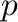
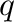

Next: environ.system() execute Up: The environ class: MODELLER Previous: environ.dendrogram() clustering Contents Index
This command calculates principal components clustering for the input matrix of pairwise distances. This matrix must be in the PHYLIP format and can be produced by the alignment.id_table(), alignment.compare_sequences(), or alignment.compare_structures() commands.
The projected coordinates  and  are written to file file. The output file can be used with ASGL to produce a principal components plot.
This command is useful for deciding about which known 3D structures are to be used as templates for comparative modeling.
Example: See alignment.id_table() command.